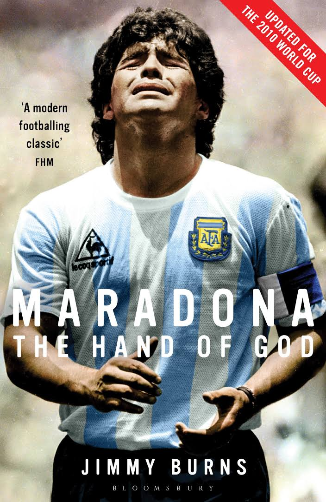

La mano de Dios

Tras el primer tiempo, el partido aún estaba empatado. Maradona comenzaba a desequilibrar el encuentro, y cuando corría el minuto 6 del segundo tiempo llegó una de las jugadas más polémicas en la historia de los mundiales: Maradona tomó el balón fuera del área y con la pierna izquierda se lo pasó, entre varios defensas ingleses, a su compañero Jorge Valdano, quien intentó llevarlo, pero el esférico fue interceptado y lanzado atrás y arriba, en su afán por despejar, por el defensor Steve Hodge...

 Esta es la historia de un coloso incomparable de 115 años que nació con el impulso juvenil de un grupo de soñadores y que creció sin pausas, empujado por el amor, por el sentimiento, por el talento, por el esfuerzo y por la solidaridad. Esta es la historia de una pasión que no conoce de fronteras, que se transmite de generación en generación y que se alimenta día a día con nuevas epopeyas, con nuevos emprendimientos, con nuevas ilusiones. Esta es la historia de Bernabé Ferreyra y de Antonio Liberti, de Los Millonarios...
Esta es la historia de un coloso incomparable de 115 años que nació con el impulso juvenil de un grupo de soñadores y que creció sin pausas, empujado por el amor, por el sentimiento, por el talento, por el esfuerzo y por la solidaridad. Esta es la historia de una pasión que no conoce de fronteras, que se transmite de generación en generación y que se alimenta día a día con nuevas epopeyas, con nuevos emprendimientos, con nuevas ilusiones. Esta es la historia de Bernabé Ferreyra y de Antonio Liberti, de Los Millonarios...